Today

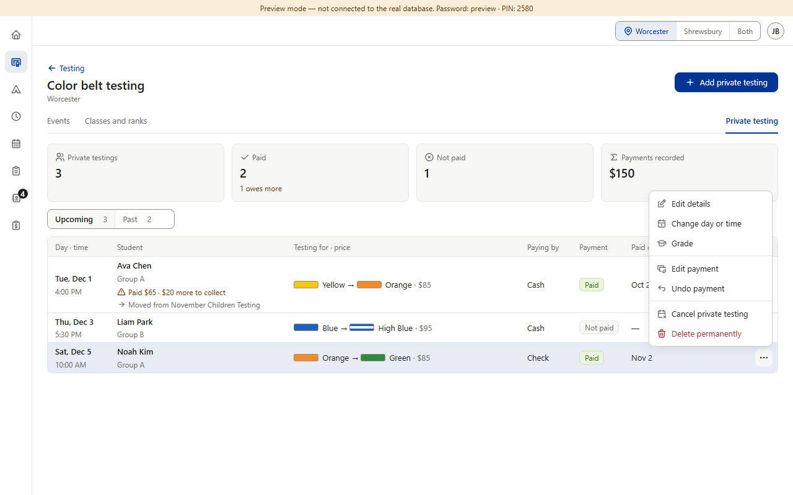
After
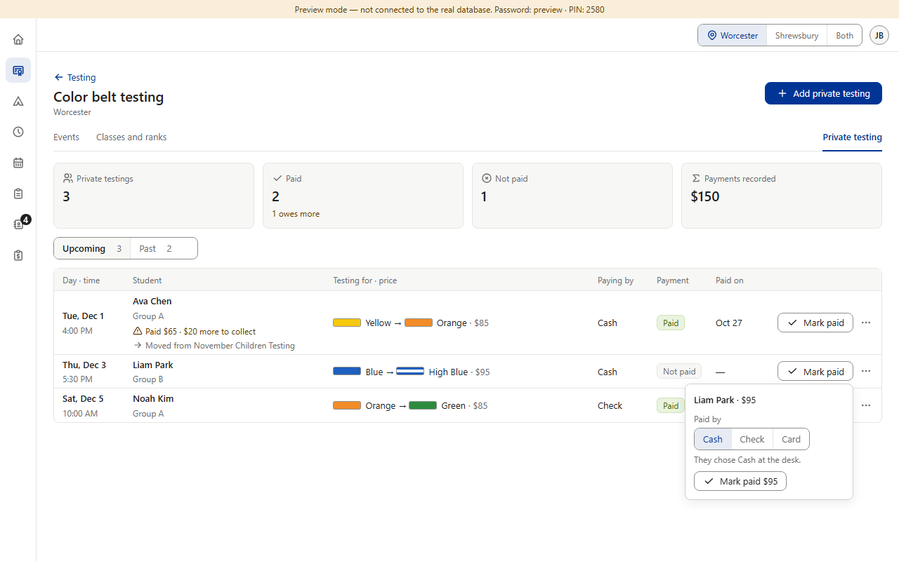
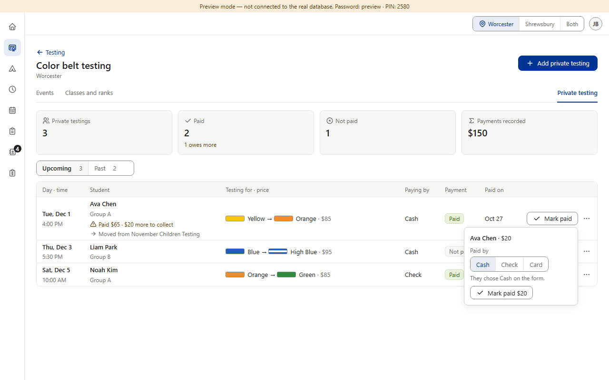
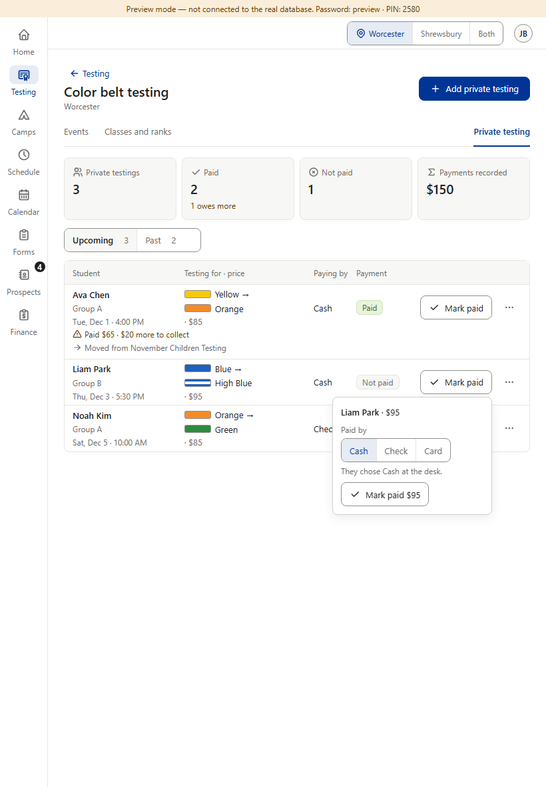
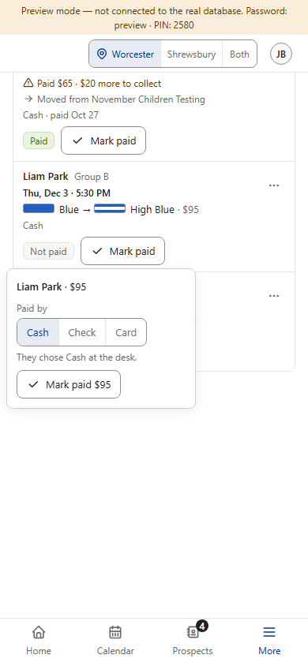
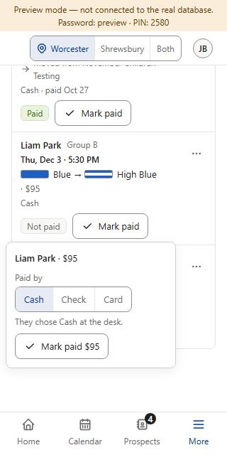
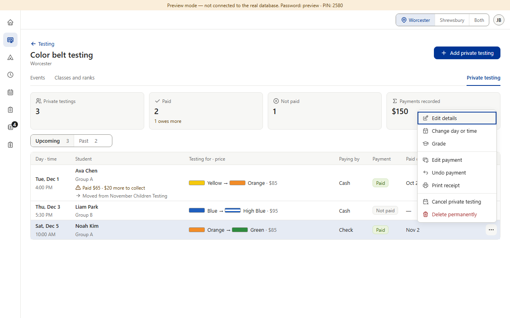
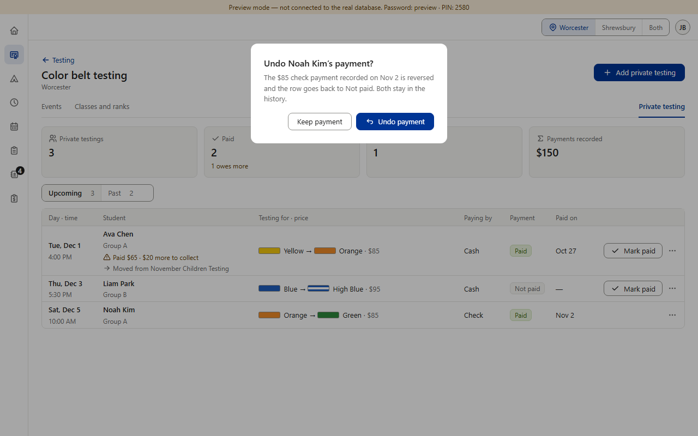
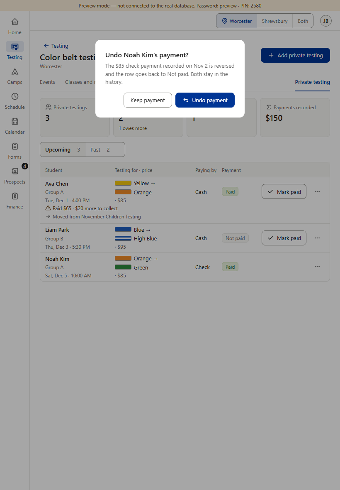
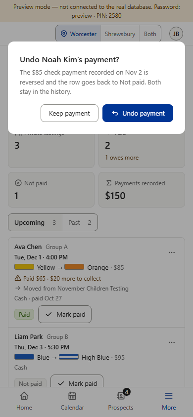
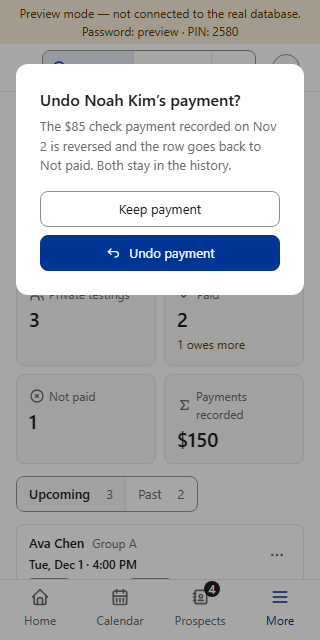

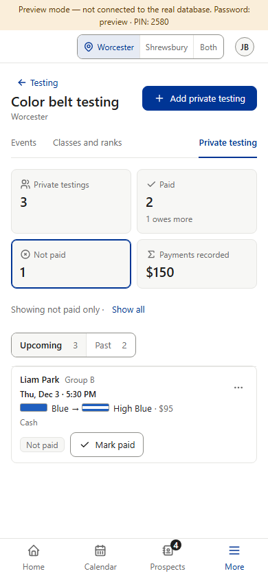
Mostly already decided: the same Mark paid box, Print receipt and Undo question as P1 (Star v0.518, shared parts v1.103–v1.107), plus the private cards becoming filters (v1.013). Two questions of Color Belt’s own are at the bottom. (Preview screenshots, fake data. The “after” is drawn on top of the real page with the shared parts’ real markup; nothing in the app is built yet.)












Today the note is amber text (the warning color) on the gray card; it is the only colored card note in the dashboard. The shared cards draw every note gray (Payments recorded’s “includes $85 from cancelled”, Star’s school counts). Each row that owes more already has its own amber line with the ⚠ icon: “Paid $65 · $20 more to collect”.
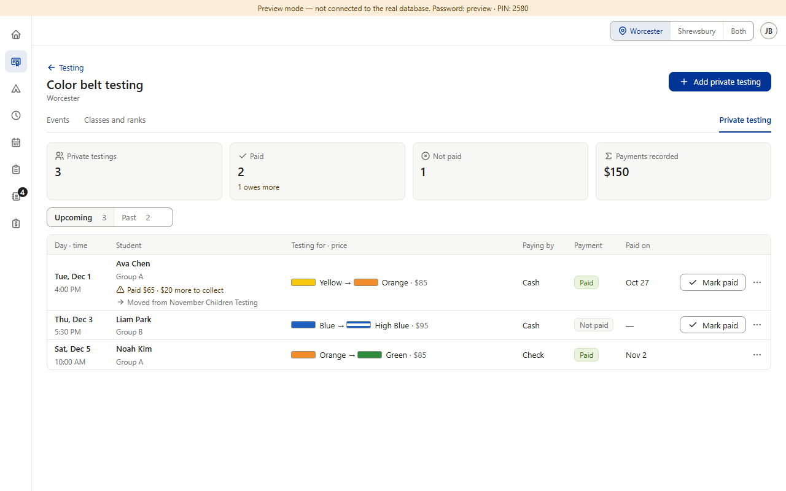
Looks as today. Needs a change to a shared part (an amber note option on CountCards): asked of Dashboard core through Main, so P2’s build waits for it. Amber text without the ⚠ icon and its pale background goes against §7 (amber is always icon + text), and on the gray card it reads almost black (it is hard to tell from gray, as you can see).
Recommended. No shared-part change, so nothing waits. The card only counts; the warning stays where staff act on it: the row’s amber “⚠ Paid $65 · $20 more to collect” line and its Mark paid button. Same words, only the color changes.
The cards already count only the side shown (Upcoming: 3 · 2 paid · 1 not paid; Past: 1 · 1 · 0). The closest pattern is the event roster: its Not paid filter stays on when you switch class, and a class with nobody left shows “Everyone in this class has paid.” (Star and Camps have no second switch to copy.)
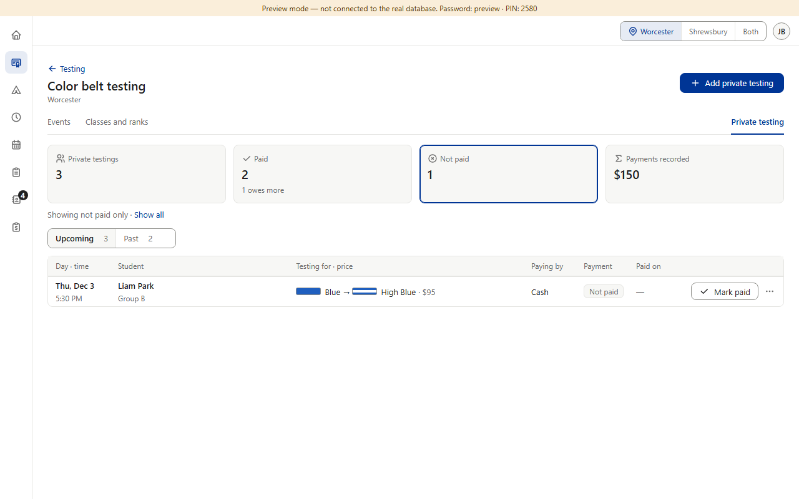
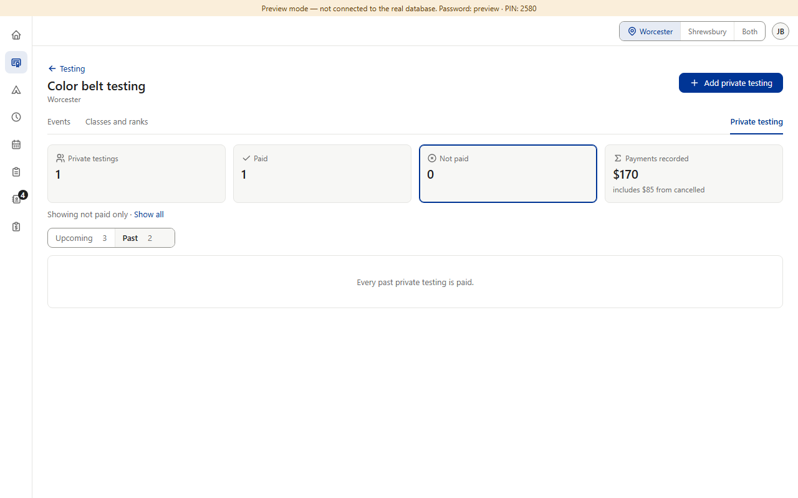
Recommended. Same as the roster staff already use: a filter you turned on stays on until Show all or tapping the card again; the blue edge and the “Showing not paid only · Show all” line always say it’s on. Lets the desk check “who still owes” on both sides in two taps. The filter is kept only while the page is open, as the side is today.
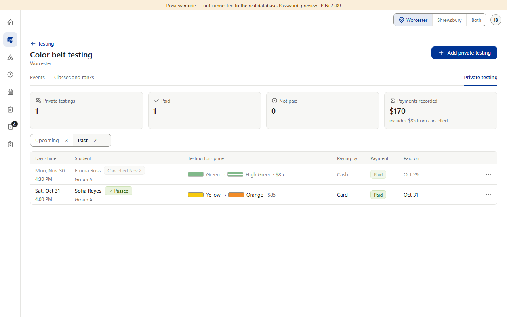
Never an empty-looking list after a switch, but it behaves differently from the event roster, and checking who owes on Past needs Not paid again (one more tap).
Everything else is copied from P1 / Star v0.518 and the shared parts. Answer Question 1 first (A or B), then Question 2.